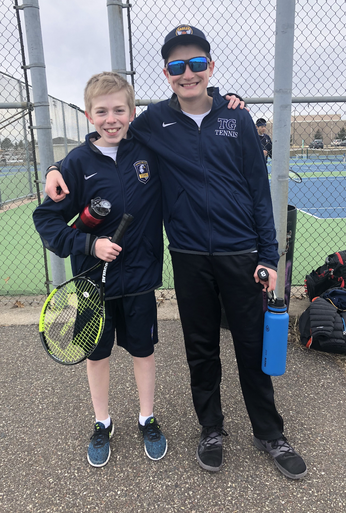

2019-2020
In the 2019-2020 season I started training and taking tennis more seriously. However, the boys season for tennis is in the spring, and that is right when covid started. On top of this, my mom had just started chemo therapy which meant me and my family had to go into quarantine. I ended up not picking a racket up again until the following tennis season due to being in quarantine.
